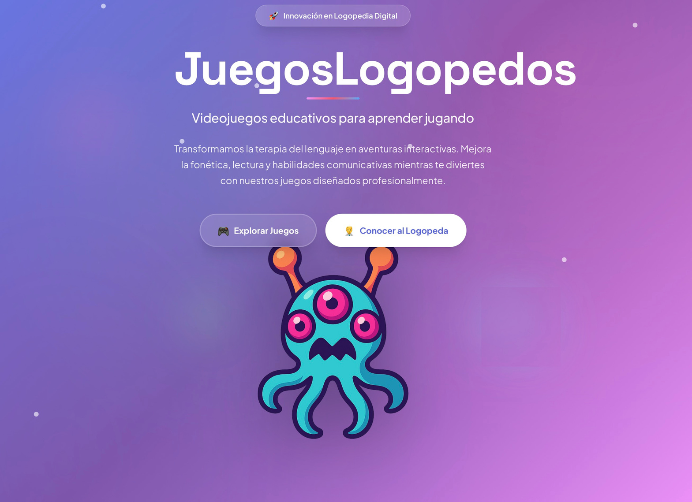

WEBINAR · QUÉ VAMOS A APRENDERNo vengo a enseñarte una IA.
No vengo a enseñarte una IA.
Vengo a enseñarte todo lo que puedes construir.
Materiales terapéuticos, informes visuales, videojuegos, asistentes especializados y recursos para familias y aula.
Una panorámica real de Logoped-IA y del recorrido formativo para aprender a utilizarlo con criterio.
LOGOPED-IA · WEBINAR 30'01